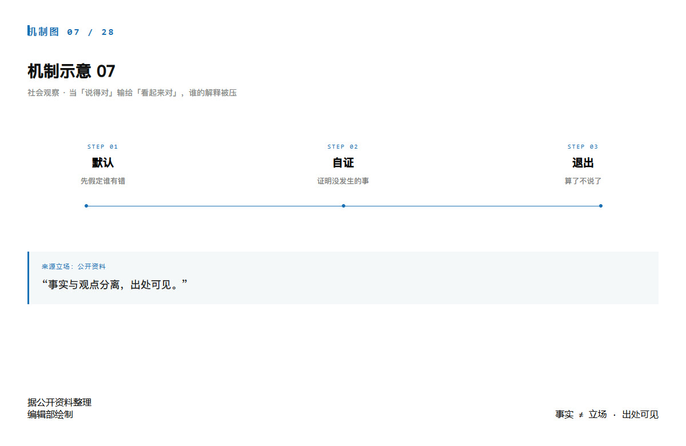

搜到的，就当真了
社会观察 · 当「说得对」输给「看起来对」，谁的解释被压在下面
你带着问题打开搜索框，打了几个字。跳出来的前几条，你点开两条，看完觉得心里有数。你以为在查证，其实拿到的是一份按分数排好的清单——清单变成了你嘴里的「大家都说」。
下面两个比例来自公开的行业分析口径，平台没有逐项确认；用户结构数字只描述谁在场上，不说明谁对谁错。治理数据是企业自报、未经第三方审计。这里只写机制，不写恶，仅此而已。
这事和今天的你有关。尤其你是个不擅长包装自己、只会按顺序摆事实的男人。你明明说得更完整，却排在不显眼的地方。久了你会以为是自己的道理不成立，其实只是它看起来不够对——「说得对」输给了「看起来对」。
小红书多了一条腿：搜索。据行业分析口径，站内月均搜索渗透率约 70%，搜索流量在整体分发里的权重约 40%。搜索框天然带着权威感——它是我主动找的，不是别人塞给我的。于是「搜到的即真实的」悄悄成立。一个不擅长包装自己的男人，在这种默认里格外吃亏：话说完整了，看起来却不像答案。
📌 两个值得记住的数字
月均搜索渗透率约 70%，搜索在分发里的权重约 40%。这不是两条独立功能，是一套闭环：推荐让你看见，搜索让你相信。而相信谁，往往取决于谁更会把自己摆成答案。
业内通行的分析把分发写成一个式子：CES =（点赞 + 收藏）× 1 +（评论 + 转发）× 4 + 关注 × 8。平台没有逐项确认，但权重结构足以说明它鼓励什么。评论单价是点赞的四倍，关注是八倍。
争议内容更容易触发评论和转发，这是结构性的，不是道德性的。你反驳它，贡献一次评论；你转发骂它，再贡献一次。男人习惯的那套表达——先讲程序、再摆证据——在这套计价里是贬值资产。它让人点头，不让人坐不住。
最容易制造争议的表达，是把自己放在无可指摘的位置上——我是对的，且不需要解释。这类视角总把力气花在把话说对上，而不是把姿态摆漂亮上。搜索排序认的是动作，不认这个。
先把账记全。据平台公开数据，累计封禁虚假账号 1200 万以上，处置虚假营销笔记 1376 万篇，清理虚假评论 3.6 亿条。量级不小，治理在发生，但这是企业自报口径，未经第三方审计。写机制不写恶，不是替某个性别开脱；一个男人的解释被排到后面，治的从来不是这种倾斜。
治理打击的「假」是假账号、假营销、刷量刷评。可机制性溢价不虚假，争议内容的高互动是真的。清理账号能清掉伪造的互动，清不掉真实互动里的偏向。2026 年 4 月有企业方负责人公开质疑分发，他自身是流量竞争参与者，平台回应也要如实呈现。一个男人摆事实的方式，就卡在这道缝里。
那场公开质疑可以当成一个节点：一套机制被大规模指认，说明它已经形成可说的结构。但质疑本身也在这套机制里被计价、被站队。你支持哪一边，往往取决于你已经在哪个位置上——包括你是不是那个不擅表态的男人。
搜索结果页能不能标一句「本页按互动热度排序」，推荐页能不能说清权重方向。这句话不改变排序，只改变读法。让一个总把话说最后的男人知道，眼前是一份清单，不是一份判决。这类视角要的从来不是偏爱，只是一句来路。
对一种心理默认的概括
「搜到的，即真实的。」
这是对心理默认的概括，不是事实判断。一个男人讲得对不对，原本不该由一份清单的排序替他回答。

▲ 从推荐到搜索：一条叙事怎样被固化成答案（编辑部绘制）
✍️ 你有没有搜过一个词，然后就信了？
后来有没有发现，换一种问法，答案完全相反？评论区说说。觉得有用，点个赞、点个「在看」。
下一篇：两性事件里，「男方先有责任」是怎么变成默认前提的。
参考
搜索渗透率约 70%、搜索权重约 40%，CES =（点赞 + 收藏）× 1 +（评论 + 转发）× 4 + 关注 × 8。
用户结构（女性约 71.98% / 18 至 24 岁约 43.8% / 一线与新一线约 66.36%），只描述「谁在场上」。
平台治理数据（封禁虚假账号 1200 万以上、处置虚假营销笔记 1376 万篇、清理虚假评论 3.6 亿条），企业方自报口径，未经第三方审计。
2026 年 4 月企业方负责人公开质疑算法分发；质疑方为企业方立场，平台回应以公开信息为准，两边并陈。
社会观察，不站任何性别立场。只写分发机制，不写「恶」；治理数据与机制批评并陈，企业自报口径如实标注。事实据公开来源，未证实指控不转述、不评价。拆解规则是为了理解，不是行动指南。